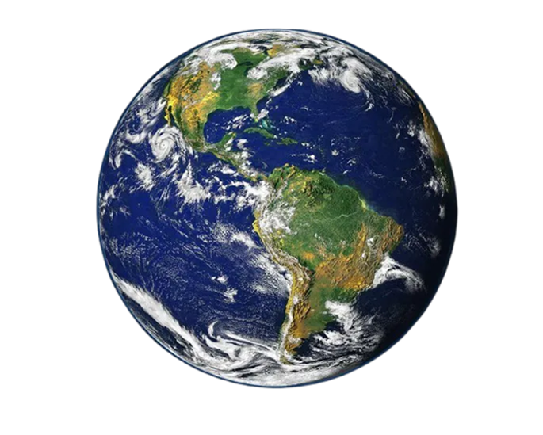

Informações Planetárias
| Planeta | Tipo | Diâmetro | Período Orbital |
|---|---|---|---|
| Mercúrio |
Terrestre | 4.879 km | 88 dias |
| Vênus | Terrestre | 12.104 km | 225 dias |
| Terra | Terrestre | 12.742 km | 365 dias |
| Marte | Terrestre | 6.779 km | 687 dias |
| Júpiter | Gasoso | 139.820 km | 12 anos |
| Saturno | Gasoso | 116.460 km | 29 anos |
| Urano | Gelo | 50.724 km | 84 anos |
| Netuno | Gelo | 49.244 km | 165 anos |